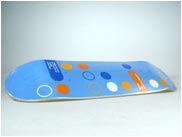
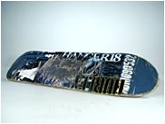
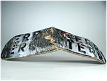

板面是滑板部件中最重要的部分。板面的选择对你的滑板性能有很大影响。那么哪种板面是最好的呢？这取决于你的需要。你需要 ollie 很高的？还是做 slide 很好的？还是最耐用的？现在我们来看看几种不同选择滑板的标准。
滑板的形状。这是用来挑选滑板最常用的标准。选择形状的时候，需要注意很多因素。长度，宽度，板头长度，板尾长度，桥距。现在大多数滑板的宽度在 7.5 英寸到 8 英寸之间。有一些还要窄一些，或者宽一些，但是大部分相差不会超过半英寸。最好熟悉一下“英寸”这个单位，因为市场上和网上的板面都是以英寸为单位的，要是每个都换算成厘米是很麻烦的。
选择滑板的时候还要注意一些其它方面。如果你的板子断了，裂了，你就需要换一个新的。如果你常用板尾刹车，板尾的边沿就会变得锋利，这叫做“razortail”，这样板尾就容易碎成小片，然后就会会减少板子的弹性。进水和裂口也会降低板子的弹性。所有这些因素都会影响板面的弹性（或者长度，如果你愿意的话）。
就耐用而言，没有一种板子有绝对优势。大多数板面是 7 层板，是用 7 层薄板胶合在一起的。有些公司声称他们的板子很轻，这大多使用了更薄的木板，或者更少的层数，或者使薄板交叉胶合。这些方法使你的板子稍微轻一些，但是它们同样使板子稍微脆弱一些。有些公司甚至加入更多的层或者加大板的脚窝来增加板的耐久性。
有些公司在板面的构造上采用不同的做法或者创新。比如，Flip 公司的 “New Wave Construction”专利技术，在板子表面上加上一层波纹状的硬条来增加板面的性能。Real 公司采用了“Triple Beam Construction”，使用了 7 层胶合板，其中 3 层是交叉胶合的。这使板子的弹性和耐久性有较大增加。
如果你的板子很坚硬，这样就能发挥它的最大性能。如果它比较绵（进水，或者过度扭曲造成），那么它性能不好。但是如果它太硬，就会变得容易碎。那么其中就有一个中间值，对吧？滑板公司每天都在产生革新，试图使自己成为板面制造技术的大拿。但是我们仍然没有发现那种办法好一点。
需要提醒一下的是，不管你的板子有多么不好，太厚，太薄，太软，太脆，掉渣厉害，你滑板的问题很大可能就出在你自己身上。不要忘记体验滑板的快乐！